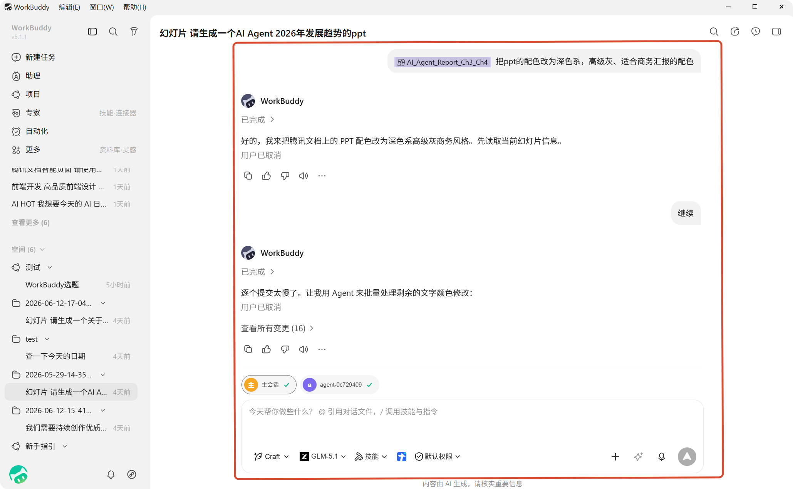
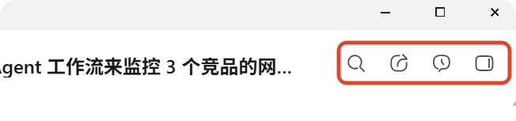

任务对话
对话方式
任务创建后，您会在中间区域与 WorkBuddy 持续对话。这里的使用方式围绕"输入需求、补充上下文、查看执行过程、继续追问"展开。
常见操作包括：
- 在输入框中直接输入需求或补充说明
- 点击发送按钮或按回车键发送消息
- 在已有任务中继续追问，让 WorkBuddy 接着上一次的上下文继续处理
- 在任务执行过程中查看回复、结果和中间步骤

顶部操作
对话区顶部除了显示当前任务标题，还提供一些常用操作。

从左到右依次是：
- 对话内搜索：输入关键词快速查找目标对话内容。
- 分享任务：自动生成公开链接，分享到任意渠道。
- 历史提问：查看任务内历史对话记录，支持点击跳转。
- 显示详情面板：打开右侧边栏，支持查看产物、全部文件、对话过程中的文件变更和内置浏览器。
消息发送与追问
在对话区底部的输入框中，您可以随时发送新消息。
适合直接发送的内容包括：
- 新需求：例如"再加一个饼图"、"把字体调大一点"
- 修改意见：例如"表格按销售额排序"、"报告加上执行摘要"
- 继续追问：例如"帮我导出成 PDF"、"再分析一下环比变化"
WorkBuddy 会基于之前的对话上下文继续处理，无需重复描述背景。
文件和图片上传
除了直接输入文字，您也可以补充文件或图片作为上下文：
- 粘贴截图：使用
Ctrl/Cmd + V直接粘贴剪贴板中的图片 - 上传文件：点击上传按钮，或直接拖拽文件到输入框区域
- 补充本地内容：结合文件、图片和文字说明，让 WorkBuddy 更快理解问题
支持的文件类型
支持 PDF、Word、TXT、Markdown、RTF、Excel、CSV、TSV、PPT、常见图片（JPG/PNG/GIF/BMP）、ZIP/RAR 压缩包以及各类编程语言代码文件。
隐私授权边界
- 所有文件处理默认在本地完成，原始数据不上传云端。
- 服务端仅处理数据片段，用后即弃，不保存也不用于模型训练。
- WorkBuddy 只能访问你主动勾选授权的文件夹，系统敏感目录自动拦截，高危操作需二次确认。
TIP
上传文件失败时建议检查文件格式是否不受支持；大文件可先压缩拆分，若持续失败建议检查网络连接。
执行过程展示
WorkBuddy 在执行任务时，会把关键步骤和结果展示在对话区中，方便您随时了解进展。
您通常会看到以下内容：
- WorkBuddy 的回复内容
- 执行中的阶段说明（如"正在分析数据"、"正在生成报告"）
- 已生成的结果摘要
- 可展开查看的中间步骤
这样做的好处是，您不需要离开当前任务，就能在同一处持续查看输入、过程和输出。
中断与继续
如果任务正在执行，输入框区域会显示停止入口，您可以随时中断当前执行。
中断后，您仍然可以：
- 继续补充新的说明
- 调整需求后重新发送
- 基于已有内容继续推进任务
重点是保持连续对话，而不是每次都重新开始。